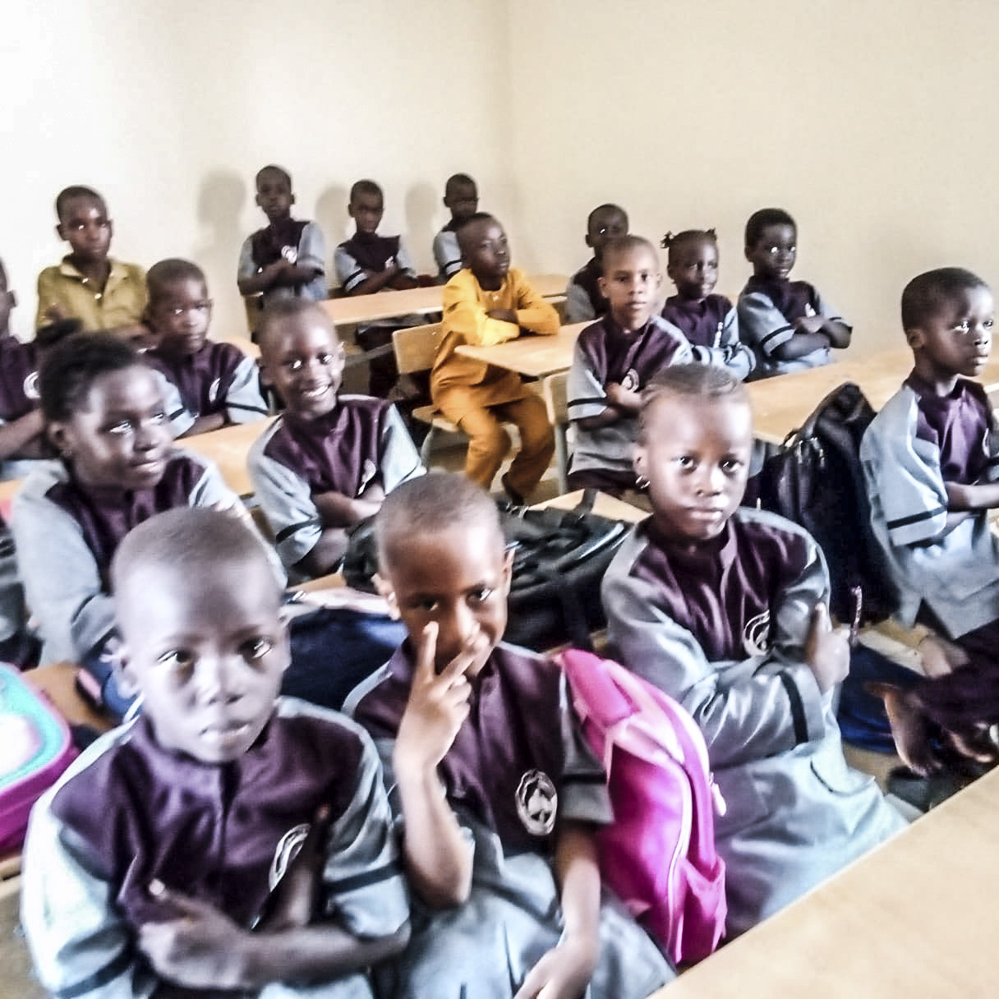

Un enseignement général de qualité
Conforme aux standards académiques pour garantir la maîtrise des disciplines fondamentales.
Voir les programmes
Une éducation de qualité, entre savoirs modernes et valeurs islamiques.
Implanté à Bambilor, l'Institut Al Maarifa Thierno Djibril Ousmane Ba s'impose comme un cadre d'apprentissage moderne et bienveillant, dédié à l'épanouissement intellectuel et moral de la jeunesse.
Nous accueillons les enfants dès le préscolaire et les accompagnons pas à pas jusqu'à la terminale, en les préparant aux exigences des examens et du monde supérieur, dans le cadre d'un partenariat privilégié avec l'Institut Al-Azhar.
En savoir plus
Des connaissances solides, tout en restant ancrés dans les valeurs islamiques. Matières enseignées : études islamiques, langue arabe, mathématiques, sciences, langues étrangères (français et anglais), sciences sociales.
Conforme aux standards académiques pour garantir la maîtrise des disciplines fondamentales.
Voir les programmesUne ouverture culturelle et une véritable maîtrise linguistique, du préscolaire à la terminale.
Voir les programmesAncrée dans la transmission des valeurs de respect, de morale et de responsabilité.
Voir les programmesLa réussite scolaire exige un cadre propice à la concentration. Notre quotidien repose sur trois piliers.
Un cadre exigeant qui développe le goût de l'effort et la méthode chez chaque élève.
Des lieux d'apprentissage irréprochables, pour la santé et le bien-être de tous.
Une totale sérénité offerte aux élèves et à leurs familles, chaque jour.
Notre engagement : offrir à chaque enfant, sans distinction, les compétences, les repères et les opportunités nécessaires pour réussir son parcours académique et devenir un citoyen accompli.
Fondateur de l'Institut Al Maarifa Thierno Djibril Ousmane Ba à Bambilor, Thierno Elhadji Malick Ba est animé par une conviction profonde : l'éducation est le pilier fondamental de l'épanouissement individuel et du progrès social.
Face aux enjeux contemporains, sa vision repose sur une alliance harmonieuse entre savoirs académiques modernes et enseignement religieux et moral. Pour Thierno Elhadji Malick Ba, former un enfant ne se limite pas à lui transmettre des connaissances intellectuelles : il s'agit de façonner son caractère et de consolider son ancrage spirituel et éthique.
Son ambition pour l'Institut et pour chaque élève se structure autour de principes clairs :
« Former des élèves instruits, disciplinés et attachés aux valeurs morales pour bâtir la société de demain. »
Aujourd'hui, l'Institut accompagne les apprenants du préscolaire à la terminale, en plaçant au cœur de sa mission l'excellence académique, la discipline, le respect, la responsabilité et la transmission des valeurs islamiques.
Son ambition est de contribuer à l'épanouissement de chaque élève et de préparer les générations futures à bâtir un avenir prometteur, fondé sur le savoir, la foi et l'intégrité.
Passionné par la langue arabe, la civilisation arabo-islamique et l'art d'enseigner, M. Ousseynou KHOUMA met aujourd'hui son expérience et sa vision au service de l'Institut Al Maarifa Thierno Djibril Ousmane Ba, dont il assure la direction.
Son parcours s'appuie sur une alliance solide entre rigueur académique et pratique du terrain. Au fil des années, il a façonné sa démarche pédagogique au sein de divers établissements et structures de formation, guidé par un engagement constant : transmettre le savoir avec excellence et accompagner l'épanouissement des apprenants.
Son itinéraire universitaire témoigne d'une spécialisation poussée dans les études arabo-islamiques, menée principalement à la Faculté des Lettres et Sciences Humaines (FLSH) de l'Université Cheikh Anta Diop (UCAD) de Dakar, tout en s'enrichissant d'une ouverture internationale :
Spécialisé dans l'enseignement de l'arabe moderne et la formation pédagogique, M. Ousseynou KHOUMA a forgé son expérience au contact direct des apprenants et des équipes éducatives.
De ses premières années d'enseignant jusqu'à ses responsabilités actuelles de Directeur de l'Institut, il veille à placer la rigueur intellectuelle, la transmission des connaissances et le développement humain au cœur du projet de l'établissement.
Rejoignez l'Institut Al Maarifa Thierno Djibril Ousmane Ba pour une éducation associant connaissances modernes et valeurs islamiques.
DÉCOUVRIR LES INSCRIPTIONS